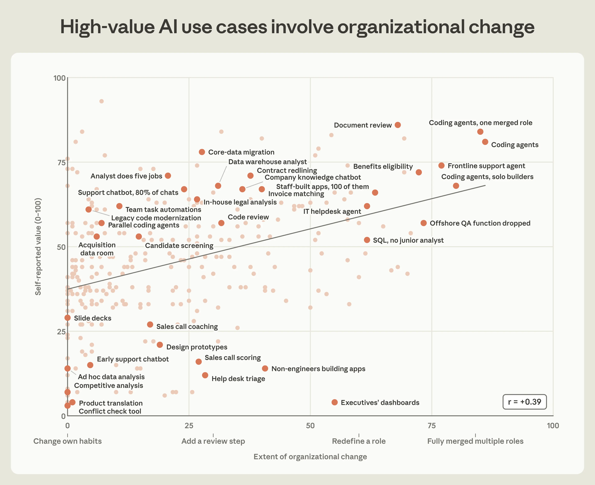
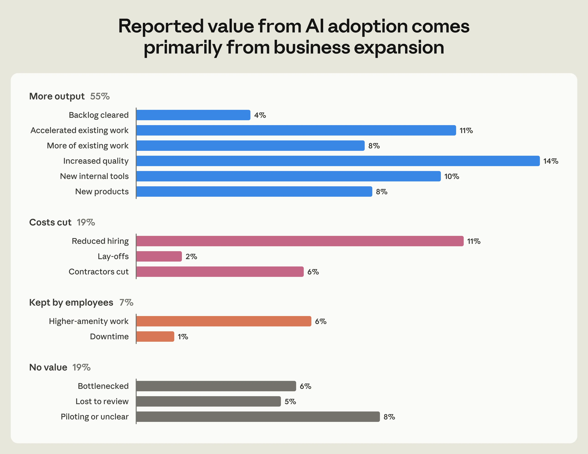
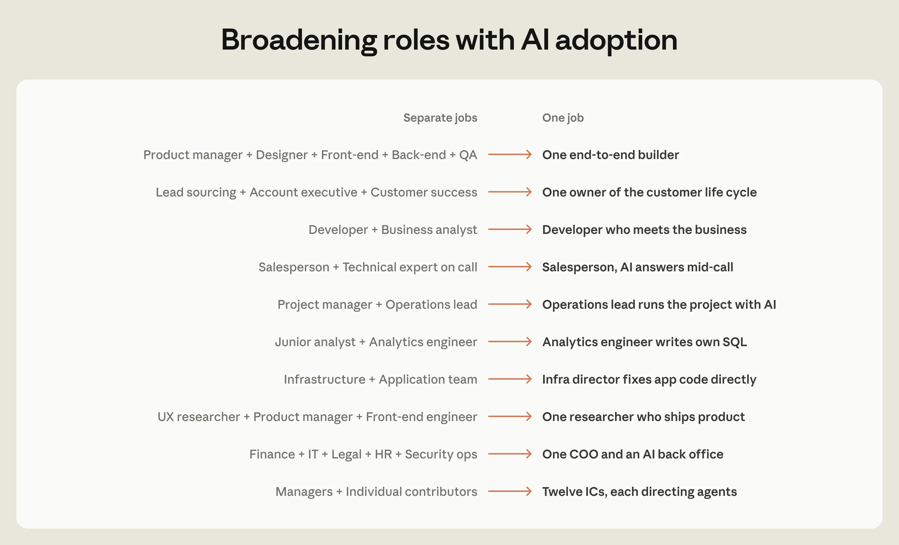
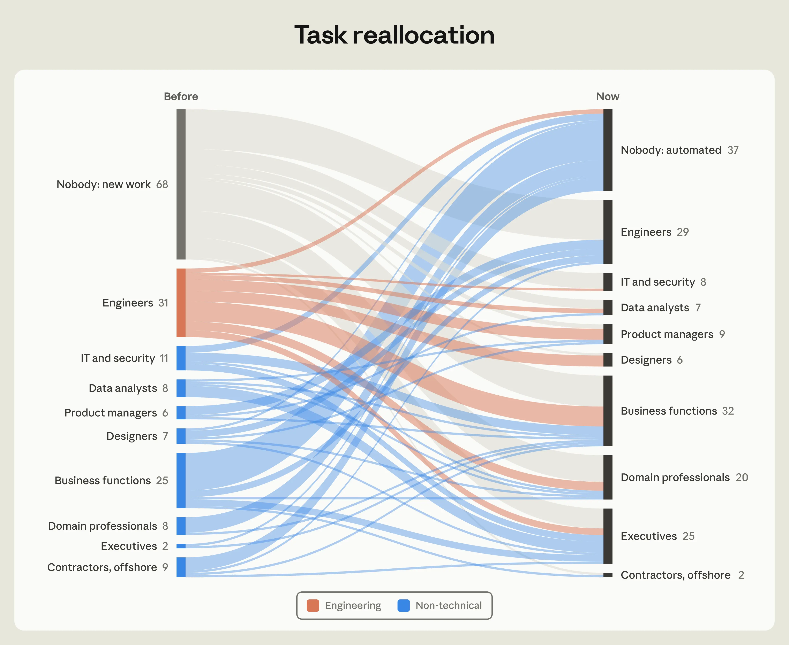

Summary
How are businesses across the economy adopting AI? What bottlenecks and challenges have they faced? How can employers reorganize human expertise around increasingly capable models? To understand businesses’ experiences better, we conducted 66 interviews with 58 of Anthropic’s enterprise customers. We found:
- Sources of AI value. Companies are deploying AI across a dizzying range of knowledge work tasks. In particular, they are increasingly using coding agents to bring software capabilities to nontechnical roles. Interviewees report that most uses of AI add value by increasing their output, rather than by cutting costs. They attribute this both to AI accelerating existing work and to its role in introducing novel product and service improvements.
- Impact on employment. Across our interviews, we saw very few examples of domestic layoffs that were driven by AI automation. Although some companies reported hiring more due to AI, most companies reported hiring less due to AI. Many also reported reducing their use of contractors, particularly offshore ones. These reported cuts could be an early warning of job disruption in the international business services industry.
- Bottlenecks. Companies reported a range of bottlenecks, including experts resisting AI deployment and tasks that are not accelerated by AI. As coding speeds up, for example, other tasks—like code review, sales, and strategic decision-making—increasingly need to keep pace.
- Limits to top-down and bottom-up approaches. Many companies approach AI by identifying a workflow to automate and rolling out a top-down solution. This approach can lead to job insecurity, fears of workplace surveillance, and resistance from the experts needed to set up an effective and durable workflow. Companies that distribute AI tools and wait for bottom-up adoption see some valuable AI use but face bottlenecks from unequal adoption and single-task AI implementations.
- Reorganizing for AI. Interviewees described the highest-value uses as involving meaningful reorganization. Some companies are broadening their employees’ roles to ensure individuals can take ownership over whole workflows, and are redeploying employees to the “bottleneck” tasks that AI models cannot do. Some also seek to empower employees by building out infrastructure to support nondeveloper coding and by providing broad-based internal access to business data. These companies are reorganizing to take advantage of ongoing model capability improvements rather than settling on a fixed approach that assumes AI tools will remain as powerful as they are today.
Introduction
The use of LLMs has exploded across the economy. How are human organizations reshaping around these strange new collaborators? Consider an employee at a midsize law firm that we spoke to. For years, the firm’s mailroom had followed the same protocol: a scanner sent PDFs of incoming correspondence to an inbox; a mail clerk opened each PDF, skimmed it, clicked “Save As,” renamed it, and placed it in the firm’s file system. The process took five minutes per letter. One day, a senior developer visited the mailroom to watch the mail being processed. In a month, he built an AI system that eventually became two API calls, which name the document based on its first page and then assign it a place in the firm’s document system. The mail clerks “were blown away.”
An employee at another law firm we interviewed hoped AI would create “a second brain” for the firm. (“For higher-level stuff, it just opens up possibilities.”) But the firm struggled to get everyone to use AI effectively. Demand letters to potential defendants were filled with excessive em dashes and occasional errors. Attorneys building apps kept “running into the wall based on hallucinated menus or buttons that don’t exist.” Others worried about confidentiality and data security, or they just didn’t “have time to get onto this AI train.” A few power users inundated the firm with AI prose, “casually sending Claude-prompted seven-page instructions to the IT team.”
A third law firm we spoke to adopted AI early and achieved strong uptake. One of the firm’s early projects was an AI timekeeping system that saved attorneys work tracking billable hours. IT staff saw parts of their job automated, but they then focused on building secure infrastructure to host apps and manage context that served the rest of the firm. As AI tools spread, the firm realized that associates were no longer needed to write first drafts of certain legal documents. But without writing, “how does an associate know if that’s a good draft or a bad draft?” So it introduced a new workflow where junior lawyers were “required to really take that first [AI-written] draft and work with a senior attorney,” pairing off and marking up and editing the draft together.
These three firms applied the same technology in the same industry but in different ways. The first firm automated a workflow, creating efficiency gains but risking job displacement for the mail clerks. For the second, bottlenecks to adoption and effective implementation prevented job displacement but also blunted productivity gains that would benefit the firm. The third reorganized work without eliminating any jobs, because effective use of the technology required redeploying employees toward new tasks. The firm redesigned roles to maintain human expertise as a complement to increasingly capable AI models.
In this article, we explore the connections between AI-driven value and work reorganization through 66 face-to-face interviews conducted across 58 companies in the US, all of which are in the midst of adopting AI. We interviewed executives, managers, and individual contributors. We talked to employees at AI-native startups and 100-year-old businesses. We interviewed people at manufacturers and tech companies. We spoke with structural engineers, dentists, and accountants; employees at hedge funds, law firms, and private equity firms; a property manager, a trucking company, and a publisher. They’re all Anthropic customers, but many also use other AI tools. They were selected for this study because of their range across industry, size, and AI usage, though they are not a random or systematically representative sample.
As in other qualitative research, we present stories and a framework to organize them, with the expectation that follow-up quantitative research can test these ideas further. The interviews were done anonymously, both for the interviewees and their companies. Any names in the report are pseudonyms.
How are businesses adapting to AI?
In our interviews, we gained insight into how AI has become embedded in businesses across the economy. Some of the AI agents we heard about are sending faxes back and forth, as doctors’ offices refer and intake patients. Other agents are giving advice to technicians when an X-ray machine breaks, and still others are then marking up the X-rays to help patients better understand them. Agents are reading property deeds from the 1800s and working out delivery routes for gaming machines. Recently, an AI agent analyzed a company’s organizational chart and suggested departments where the company could add headcount: “Three heads here, we need to add two there, zero here.”
Mostly, agents are writing code. Interviewees described 100 pieces of software that they wrote with AI in enough detail that we could categorize them. Eighty percent of this software automated previously manual work, like spreadsheet-based financial updates or taking meeting notes. Another 20% replaced existing software, often previously purchased from outside vendors. Agents are building apps for private parking enforcement, 401(k) audits, and trademark checks for new product names. They are making dashboards to track portfolio companies, equipment repairs, and debt collectors’ phone calls.
How have human organizations harnessed these new assistants? We use our interviews to explore several aspects of these deployments. We begin by estimating how much value interviewees ascribe to AI deployments and relate that to a measure of how much organizational change they required to implement. Figure 1 plots nearly 300 AI applications that interviewees discussed in detail. We define an application as a specific AI use case in a specific company. We coded discussions of each application according to the value interviewees attributed to it and the extent to which the organization had to make significant organizational changes to accommodate it. These value assessments are primarily qualitative descriptions on the part of interviewees, not typically based on A/B tests or other quantitative assessments.1

Figure 1 shows that many light-touch AI applications can fit into an existing organizational structure, like ad hoc data analysis or slide deck design. However, many of the simplest applications were rated as relatively low value by the employees who described them. Higher-value deployments tend to require changes to processes, like AI review of every code commit, or roles, like a marketing manager who edits skill.mds containing branding guidelines instead of designing individual documents.
Several interviewees described AI adoption as essentially a challenge of organizational change: flattening organizations, shifting reporting lines, or dropping functions. At one firm, for example, executives decided that junior analysts were no longer necessary because executives could complete their own SQL queries. As one accountant put it, “It’s a combination of process re-engineering and systematic discipline.”
There are several reasons why the most valuable applications led to significant organizational change. In some cases, the AI applications required a structural change in order to be successful, such as when a policy had to be clarified so that AI agents could rigorously apply it in an assessment workflow. In other cases, initial success spurred excitement about making larger organizational changes to further harness AI. In others, the success of using AI forced downstream changes. One commercial real estate company saw its staff start sending out client-facing documents themselves. But this meant they had violated company rules that asked employees to route external materials through the marketing department. As an IT director explained, “That’s good because, hey, we got another client. That’s bad because our standard operating procedures are starting to fall apart.” These stories echo academic research that shows that organizational change is necessary to derive value from transformative technologies.
Next, we studied what, exactly, value means in the context of AI adoption. Figure 2 shows that interviewees described most AI applications as adding value by increasing a firm’s output rather than cutting costs. Around half of the applications that increased output were due to AI accelerating or expanding existing work. The other half were the result of AI improving the quality of products and services or creating new products altogether. For instance, a medical group improved service quality by using AI to give patients an up-front estimate of after-insurance costs. A commercial real estate manager mocked up vacant units for potential tenants with their own branding (“Here’s what your sandwich place would look like in this space”). A dental company introduced an after-hours AI answering service, so patients’ midnight calls no longer went to voicemail.

In one-tenth of the use cases laid out in Figure 2, value was captured directly by employees, who were either doing more enjoyable work or were doing less work altogether. One manager described how bringing AI into his construction company meant that “work can be a joy again instead of a difficult, painful thing.” Senior engineers at an engineering consultancy described being thrilled to be free of tedious standards reconciliation work.
This sentiment was particularly common in cases where AI sped up peripheral tasks that were distracting to experts, like making pitch decks for product developers or preparing CRM reports for sales representatives. An employee at one construction materials company said they appreciated a whole series of small, personal automations that were “changing my life because now I do so much less work.” An executive at a food industry company remarked on “the number of people who just have thanked me because they could take a vacation.” (This is consistent with a Danish survey that found that around 10% of employees who save time with AI chatbots say they take more breaks or have more leisure time.) But some managers were less enthused. One frustrated executive described his employees as hiding their AI-enabled successes, saying, “They don’t want you to know, because they want to use those 10 hours a week to go walk their dog.” A private equity manager suspected that, among workers at companies in his portfolio, “some of them are working basically half days.”
Our interviews show substantial variation in the degree and kind of value companies derive from AI. The highest-value applications involve wide-reaching organizational change. These patterns warrant attention to the specifics of AI deployments across these companies. In the following section, we assess three common adoption strategies that we observed in our interviews: top-down automation, bottom-up experimentation, and a broader reorganization around AI.
Top-down automation
Mark racked his brain: had he messed anything up recently? As a paralegal at his law firm, he was rarely called into a partner’s office and even more rarely ended up in an office with two of the firm’s equity partners. They wanted to “talk about his AI use,” a topic that filled him with dread. He had already realized that models’ continued improvement would mean “the beginning of the end for my work.” He worried, “Why would anyone want to employ someone like me?”
Mark’s fears were understandable—and far from unique. This past year, AI has loomed especially large in performance assessments across industries. Some of the most sobering moments in our interviews were when managers described making difficult decisions to terminate employees who wouldn’t adopt AI. One engineering leader described experiencing a “morale hit” after the company terminated a developer who, they said, “just kind of shut down instead of trying to embrace it.” As one person at a financial services firm said of their company’s AI push, “You either get on board or don’t. And this might not be the place for you [if you don’t].” An engineering executive described grappling with the massive performance differences he saw emerging between AI users and AI resisters. Ultimately, he said, “we had a couple people who started off extremely anti-AI, and they moved a little along the spectrum, but not enough, and so we ended up letting them go.” But even heavy AI users were not immune to fears of losing their jobs or falling behind: one operations manager said she woke at 3 a.m., fearing for her career, and asked Claude, “How do I make sure I set myself apart so that AI can’t do everything that I do?”
These cases were rare. Overall, people at five companies described pushing out employees who would not adopt AI, and only two had seen AI automation fully eliminate a position and lead to someone losing their job. (By contrast, 10 companies reported hiring more due to AI, primarily into AI implementation roles and to bolster IT support, and others had grown rapidly for a variety of business reasons.) But layoffs weren’t the only adverse employment effect. People at two-thirds of the companies we spoke to reported reduced hiring due to AI: as one person put it, “We may not be firing, but we’re not hiring.” A third of these hiring declines were due to companies actively shrinking functions through attrition without backfilling the roles. But most were the result of companies forgoing hiring that, in the absence of AI, they would have needed to scale their businesses—a finding consistent with past work suggesting that AI-native startups employ fewer workers. As an engineering leader at a health management company put it, “We’ve added a lot of capacity by buying tokens instead of hiring people.”
Beyond terminations and reduced hiring, nine companies described cutting contracted software developers, customer service representatives, legal counsel, and a range of back-office functions, many of which they had already offshored. These outsourced jobs, which are based on modular tasks (self-contained pieces of work that can be handed off separately), sometimes without high expectations for quality, have been particularly vulnerable to replacement. An executive at a company that worked with an offshore design firm said, “We’ve since fired them because now we can get better quality things faster and cheaper” with AI. A finance company downsized well over 100 offshore data and developer contractors. An operations leader at a software company explained that with AI-driven contract reviews, their “legal bill has just completely disappeared.”
These reductions were often the result of top-down workflow automation. For example, one financial technology company adopted AI customer service agents and cut its offshore customer service contracts. Instead of managing human customer service representatives and fielding escalated calls themselves, customer service managers now review transcripts of conversations with the AI agents and edit the agents’ prompts, knowledge graphs, and general operating procedures. One company built an agent as part of a document review workflow. The agent reads submissions against the company’s approval policies and passes a structured analysis to human reviewers. Deploying the agent led the company to cut the number of reviewers it expected to hire for the coming year by more than 90%.
These agentic automations—in which AI agents are given instructions and then operate largely autonomously—are more advanced than the chatbots that still define many employees’ experiences with AI. AI-native startups take these automated workflows to the extreme, both in the products they offer and in how they organize their own work. One Chief Operating Officer walked us through his one-stop agentic portal for operations, noting that 90% of his operations budget was spent on AI tokens and 10% on headcount. He said of his approach, “Look, don’t hire anybody on the back office. I’m going to automate it.”
One AI startup founder told us bluntly that their company’s pitch was to replace the back-office workers their customers currently employed: “You’re trying to fire your [data] labelers, I guess.” A founder of a marketing startup described how their “marketing factory” had flipped from humans doing 80% of the work and AI doing 20% to the opposite. Another startup founder estimated that their company spent as much on internal AI use as on labor, and that it would need three times as many employees without AI. Overall, the six startups that gave us an estimate said they would need, on average, four times as many employees without AI.
Another top-down deployment involves using AI to monitor employees more closely. Under the Anthropic Usage Policy, employee monitoring and its scope must be disclosed to employees, and the monitoring must be limited to employers’ systems for security, safety, logistics, or compliance purposes. The policy further defines employment decisions, like evaluating an employee’s performance, as high-risk, and requires a human in the loop and disclosure to employees. The workplace monitoring we heard about appeared to be compliant with these restrictions, and did not always involve Claude.
One engineering executive explained, “You want to make your work legible to your manager. But nowadays I think you want to make your work legible to the agents your manager uses.” This executive, and others we spoke to, were ambivalent about the implications of these capabilities, seeing both the benefits of more accurate performance feedback and the risks of workplace surveillance—a “panopticon effect,” as one executive put it. An operations supervisor said he started each day by reviewing an AI report on the throughput and error rate of each member of his 12-person document extraction team: “If somehow there was a lag, then I can question back to them, ‘Okay, what happened this hour?’” Another operations director set up an AI-based assessment process for the firm’s customer service representatives. An agent codes their transcripts according to dozens of performance dimensions, then routes the results to a dashboard monitored by the customer service representatives’ managers.
Top-down deployments like these shift power from employees to executives and owners. But they can also be brittle, because they can quickly become out of date or obsolete. For example, the dozens of performance dimensions that customer service representatives were rated on are scored by a two-year-old model and are not taken seriously by managers. Similarly, a law firm built a series of automations for document management but ended up with a number of low-quality “zombie” apps that were hardly used. One engineering leader described a chatbot their company had built for customer service workers—an early experiment built on an open-source chat interface—as “super basic; just chat and answer.” They said the system was difficult to update and maintain, and that “we haven’t spent any more time or money on it.”
These systems are largely built by outside vendors rather than developed directly by internal users, and are marketed as targeted solutions for a specific industry and function. In interview after interview, companies described how improvements in model capabilities rendered these products outdated. As one employee said of one such system, “It’ll be obsolete in three months.” One executive despaired of the up-front investments needed to build top-down workflows as models rapidly improved: “It’s almost like we’re trying to throw darts at a spinning dart board.”
Similar problems emerge in even the most ambitious automation attempts, those targeting knowledge work that requires deep expertise. Standing up effective workflows in these areas typically requires experts to design the agents’ prompts and evaluate their outputs. But this means experts are effectively being asked to build and maintain the very systems that could replace them. One software engineer, who we’ll call Ellen, described her first encounter with automated coding: “I don’t think that my job is secure… software engineers are going to be obsolete.” Another employee put it even more bluntly: “If I’m open to this, I’m essentially building my own coffin.”
Managers also end up facing understandable resistance from employees. Recall the company that used AI to automate an approval workflow. It intended to double the output of expert reviewers and reduce hiring by more than 90%. The human reviewers balked. As one executive put it, “Just because [a reviewer] can now do double the amount of cases, how do you incentivize them to do double the amount of cases?” The company considered offering gift cards to get reviewers to comply. At the time of our interview, the executive noted that while some reviewers were down to two minutes of review per submission, “there’s some that are hanging out in the 10-plus minutes.”
Likewise, recall the senior developer who’d automated one law firm’s mailroom. Fresh off that success, he told us, his COO put him on a more ambitious project: using AI to check for conflicts of interest among the firm’s prospective clients. Under the existing process, conflict staff would run a search, print out any hits, and pass “the buck right onto the attorney.” In under a week, he built a workflow that let attorneys request a check from an AI agent in plain language, which then routed the request through conflict-checking software. But the new workflow left it to the conflict staff to work through each potential conflict—and would often surface the types of complex and difficult conflicts that had previously been passed to the attorneys. Faced with this new work, the staff pushed back, the agent was shelved, and the firm returned to its old process.
Top-down AI deployment is already changing hiring and contracting patterns by automating whole workflows. It is also prompting resistance from experts and raising fears of workplace surveillance. That resistance can result in abandoned or fragile automations.
Bottom-up experimentation
For many companies, the problems of layoffs or the AI panopticon haven’t really arrived. Recall Mark, the paralegal who worried for his job after being called in to meet his bosses. The meeting was not the one he expected. Mark explained to us that at the meeting, the partners noted that his demand letters were better than others’ and asked him how he'd prompted AI so effectively. Mark said he’d felt hesitant about sharing his workflows. He remembered telling them, “That’s my secret sauce. I have my own workflow, my own process, and respectfully—please, do not take this the wrong way—I do not want to share with anyone.”
This pattern, of a few individual contributors thriving with AI, came up in many of our interviews, particularly for companies doing bottom-up deployments. Nontechnical knowledge workers with substantial expertise in a given domain often derived the highest value from such deployments. This is in line with prior research on Claude Code usage, which found that nontechnical experts had the highest task success rates. One accountant described “vibe-coding” an app that audits whether the 401(k) payments employers process actually end up in the investment fund they are intended for. This audit process requires matching payment records across dozens of different systems and providers and previously took accountants 80 hours. “I was able to show that to our team. They were like, ‘Wow, this is super cool,’” the accountant said. “They looked at me and they were like, ‘You built this?’ And I was like, ‘Sort of. I told Claude what I needed to do.’”
In these cases, coding tools clearly empower domain experts. A former airport operations manager told us about building a vehicle tracking app, saying, “I was wielding AI like Excalibur.” Quality assurance supervisors at a chemical plant built an app to monitor filtration rates despite having no coding experience: “They know they’re using Python because [Claude] told them.”
However, even the most dramatic success stories were often limited to changes that could be made from the bottom up. An employee at a manufacturing company explained, “We’re getting just these pockets of really cool stuff that could be great for our organization, but not necessarily a way to enable everyone to use that.” Swapping out a single software tool or building a new personal productivity app can be done by ambitious individual contributors. One investment manager at a real estate firm developed a deal tracker that replaced a third-party product that cost $10,000 per year. Another created a legacy Windows XP app that would have cost $250,000 to replace.
While many of these homegrown software replacements seem like notable upgrades at first, they still require review and ongoing maintenance—which means they can result in relatively small savings overall. How customized (and, therefore, how complex) does a deal tracker really need to be? An operations director at a large law firm considered building out dashboards to monitor their recruitment pipeline, but realized:
That’s small beans. There are plenty of SaaS [products] out there that can help you make dashboards. What is it—$30 a month, $50 a month, $100 a month, even? So, we can save that money by vibe coding. But the maintenance cost obviously goes up as well, and we have to get our talent manager to start maintaining a vibe-coded dashboard.
Likewise, an engineer at a government services firm considered using AI to customize their software but decided that even if it helped them win a few contracts, “we don’t think it’s super sustainable from the maintenance and support side still. It just requires a lot of staffing.”
Figure 3 summarizes the 140 pieces of software that interviewees described as being built with AI, broken down by the software’s purpose and the role of the person who worked with AI to build it. It shows that product features and technical infrastructure remain solidly within the purview of technical employees, while nontechnical employees focus on internal apps and dashboards. This implies that the bulk of software built by nondevelopers still requires support or infrastructure from technical employees.

Beyond maintenance, these one-off, bottom-up coding projects can create substantially more work elsewhere in the organization, either in the last mile of production or through uneven acceleration across different tasks. The 401(k) audit app prototype mentioned above had to be implemented by a third-party vendor and was still not in active use months later. An engineer at an equipment manufacturer realized that AI could translate the text on their product surfaces into 10 different languages, but “we don’t have anybody that can answer the phone in those languages… So we ended up turning that [feature] off. We didn’t even ship it.” As coding accelerates relative to other functions, it hits bottlenecks: “Without the proper scaffolding in place, that bottleneck is immediate.”
These uneven changes in productivity can also run into organizational politics. As one manager put it, “In our world, it’s like Billy in Sales doesn’t trust Sally in Marketing.” Exacerbating these conflicts is the fact that the uneven adoption of AI can impose costs on nonadopters. Power users lob “Claude grenades” and shoot “Claude cannons” at the rest of the organization, while AI skeptics respond, “Guys, I’m not reading your AI email.” In one case, an AI agent put together a set of profit and loss projections that a Chief Investment Officer realized were based on outdated assumptions. As one frustrated executive put it, “A mediocre engineer with an AI is a menace to society.”
Figure 4 summarizes the bottlenecks to deriving value from AI discussed across the interviews. Many involve the uneven acceleration of tasks. The difficulty of reviewing AI outputs came up again and again, as their volume swamped scarce human attention. In one incident, an agent added an errant “S” to an API endpoint and broke a carefully planned feature release. In other cases, when coding accelerated, other functions could not keep up. Uneven employee adoption was also common, as the enthusiasm of power users failed to rub off on their peers. Companies also often noted that they lacked the necessary context and infrastructure to support AI-generated software. By contrast, customer skepticism and regulation were rarely cited as bottlenecks. The bulk of bottlenecks appear to emerge from the process of adopting AI within the organization itself.

Bottlenecks to getting value from AI. All bottlenecks to AI adoption, diffusion, and value realization mentioned in our interviews. An automated coder searched interviews for any discussion of barriers and blockers to implementing AI.
These examples evoke Paul David’s mill buildings retrofitted with electric engines—a classic account of why productivity growth may lag technological implementation. Individual contributors can only revamp processes and decisions within their own small corners of an organization, while the broader division of labor remains in place. As one hotel services operations director put it, “The individual doesn’t have the authority to change the work. They can only apply it in their own area.” The head of AI at an investment firm voiced similar frustration with the bottom-up projects he had seen: “How can we upskill and tear down our workflows and rebuild like we were starting the company again now?… Not ‘Claude, write the email,’ but, ‘Why are you even getting the email?’”
One manager described the challenge of using AI agents to automate production planning. Setting output targets required input from a half-dozen functions spanning procurement, logistics, manufacturing, sales, and planning: “They’ve done a poor job at defining who has accountability and authority to make decisions.” The manager noted that only executive pressure could force change: “Getting them to imagine doing their job differently… can’t come from them. It has to come top-down.”
Reorganizing around AI
What is the alternative? Can AI deployment avoid both brittle automation of low-value tasks and the bottleneck of hobbyist projects the organization can’t absorb? Mark, the paralegal, ultimately agreed to share his approach with the partners and the rest of his firm. He had effectively automated the most relaxed part of his job—firing off AI-written demand letters. But he gained a new responsibility: supporting his firm’s AI transition and enablement.
Some companies are experimenting with complementary organizational changes in response to AI rather than just automating existing workflows or handing out AI tools. Here, we look at three ways companies have pursued these organizational changes: broadening roles to reduce coordination costs, redeploying employees toward “bottleneck” tasks, and building common infrastructure to support nontechnical builders.
Broadening roles
When firms broaden employees’ roles, individuals become responsible for an entire workflow rather than one narrow type of expertise. Engineers, for example, might start working across product, design, and even customer engagement. One healthcare startup asked all of its engineers—not just its business people—to speak regularly to medical professionals who used their product. Having a single employee or small team own an entire product or customer relationship limits the organizational friction and potential vetoes that can otherwise block AI acceleration. As one engineering leader put it, “Two people plus Claude is the most amazing thing… if two people agree on something, just ship it.”
As production—not just of code but also of legal research, data analysis, financial modeling, and other aspects of knowledge work—speeds up, agreeing on what to build across the organization can become slow and costly. But the more a single individual or a small team controls an entire workflow, the less these coordination costs appear. One executive described rethinking their lead sourcing, account executive, and customer success roles, merging them into a single role that handles the whole customer life cycle. AI tools made keeping up with the details of each step in the deal process easier, and made the “context loss” associated with handing a task off to a colleague more costly. One startup founder described exclusively employing individual contributors and giving each of them ownership over a distinct part of the product and business. At another company, a manager explained that “we essentially collapse designer, product manager, engineer, and QA, and even infrastructure, into a singular role.” Another engineering leader aimed at “more full-body contact of engineers with customers.” Figure 5 shows examples of roles broadening from specific functions to whole workflows.

Another benefit of role broadening is that even as some parts of a job are automated, experts have less reason to fear job loss. At current model capabilities, agentic workflows still typically need active expert engagement and input to develop. They also require ongoing maintenance as models improve and workflows change. For example, one engineer automated a system to respond to production-alert tickets, which had previously been a substantial part of his job. For two months after deploying the system, the engineer read transcripts of every conversation with the AI agent and tweaked the prompts, repaired broken integrations, supplied missing vendor documentation, and approved agents’ authorization requests. Six months in, with the system working well, he still sampled transcripts every two weeks to update and maintain the system. He also kept building on it. The alert agent became a company-wide Slack agent (“the company basically runs on it now”), and then an agent that keeps skills and context up to date on everyone’s laptop.
Some companies have also found creative ways to transfer employees to new roles and build their expertise. A financial services firm, for example, shifted its internship program away from its immediate business needs toward helping interns develop domain expertise, such that now the “sole purpose is to build expertise and domain knowledge for that person.”
Redeploying employees toward bottleneck tasks
Some companies respond to AI-enabled acceleration by shifting employees toward the tasks that are still bottlenecks. If employees can chase down bottlenecks, they can better complement the capabilities of AI models. Recall Ellen, the software engineer who was initially afraid she would lose her job to coding agents. She eventually accepted that “the entire job has switched right from writing code to making decisions.” At a consulting company, consultants helped automate the process of reconciling best practices and standards documents that conflicted with one another. The consultants then shifted to more “person-to-person consulting work instead of sifting through documents.” Likewise, an engineering director suggested that their team spend more time “talking to your PM [product manager] and helping your PM raise relevant questions against the user journey.” An operations leader said automation gave them “more time for the process change and the buy-in. Honestly, that is the biggest battle—that process change.” In these cases, the work shifted toward the interpersonal and strategic tasks that limit models’ productivity.
As another example, project managers at a construction company contributed to an agentic workflow for checking in across construction sites. Previously, project managers would call crew members at different sites every morning, put notes together, and write up a daily report for customers. Now, an AI agent pings crew members, who “talk to the robot” instead. The agent synthesizes the responses, reviews previous reports, drafts a new one, and sends it to the customer. Project managers said they got their mornings back to talk to customers about more pressing needs: “an excellent customer experience—that’s number one.” Similarly, one CTO shifted his product managers’ focus to aspects of the role that require more taste, or the ability to identify product-market fit. As the CTO put it, “Claude is a terrible product manager... So it’s a lot of taste deciding what features are important.”
For engineers, code review became a critical bottleneck, so many of them have worked on solving it. One engineer explained, “You find a bottleneck. Find out how to tackle that. Have someone own that. …Code’s no longer the problem. Let’s put time in user experience testing. Let’s put time in requirements gathering.” Some companies worked on automating code review, while others expanded the share of time engineers spent reviewing code. One company abandoned formal code review altogether but had developers work side by side with Claude to assess code.
The pressure to flexibly shift toward bottlenecks is especially strong with AI, because the models improve too fast for any fixed organizational plan to keep pace. As one HR manager put it, “You wait three months, and something new you didn’t think AI could do is now possible. And you’re like, ‘Well, okay, let me revise my whole plan.’” A CTO said, “If the world could just pause for a minute and let us get some harnesses in place, that would be great.” AI adoption benefits from scaffolding that makes role changes easier as the bottlenecks keep moving.
Figure 6 shows what these role changes look like across a variety of jobs. As software development becomes the purview of a whole gamut of nontechnical functions, engineers broaden their scope across design, product management, and even core business functions. At the same time, new tasks emerge: certified public accountants grade an AI finance agent’s outputs; marketing executives edit branding skill prompts; IT decides which nondeveloper apps to put into production; a client experience manager builds synthetic customers to pitch ideas to. Production planners, accustomed to poring over spreadsheets, become data labelers, providing qualitative context for AI agents to better understand the numbers: “You should be a journalist… you should not think about competing with AI.”
Representatives at the largest firms we interviewed said they were systematically inventorying employees’ skills and tracking shifts in their labor needs to formalize these changes. At one HR support firm, an agentic workflow automated the work of a team that had assessed clients’ employees for benefits eligibility. The team pivoted to client-facing work, answering calls and providing high-touch customer support, which the company had not previously had the resources to do. At a construction company, a contract administrator helped automate their own data-gathering work and was redeployed to integrate AI across the company and maintain agentic workflows. Redeployments like these can keep automation from leading to layoffs.

Task reallocation across jobs. Cataloging task reallocations based on every description of a task change from our interviews. Each change is coded according to the person who previously performed it and the person who performed it after AI adoption. Red represents software engineering roles; blue represents other knowledge work; gray represents tasks that are introduced by AI.
Building common infrastructure
Several companies have set up common infrastructure that allows nontechnical people to build apps that do not expose security vulnerabilities or require substantial maintenance by engineers. “Every single employee now is a developer… creating additional attack surface every day,” a data security executive told us. The head of engineering at a real estate company said they “went from having a team of five developers to a team of [dozens of] developers that all want to release software.”
Perhaps the most important shared infrastructure is company data, which provides context both for increasingly autonomous agents and for employees across functions. With AI, an executive can query business data “at the moment of need” rather than waiting for a regular report from data analysts. A trucking company built an agent-accessible “data warehouse,” and managers across the company began creating their own analyses based on that data: “they’re absolutely addicted to it,” a person at the company said. Instead of a business intelligence or data science team mediating every request for analysis—“it would have ended up on the queue, sometimes a year or two”—a broad range of knowledge workers started running SQL queries themselves. At another company, a sales team leapt into data analysis, linking sales and finance data: “Anybody can do it. And so now everybody does it.” Without AI, one employee said, “they probably would have never seen [the data], or they would have never tried to do anything with it.” And the trust and safety team at an online marketplace used their new data analytics tools to identify fraud patterns. As one team member explained, “we can [now] go parse through all of our logs.” These examples all depended on companies first pulling in and consolidating their data so that AI had the context it needed. This is consistent with prior research on enterprise use, which found that more complex tasks tend to require more context from users (measured in input tokens).
Making data available to the whole organization can shift power downward. As one executive put it, “You have to trust the democratization of data.” At one company, the reporting team initially protested: “Hey, we have to stop Claude from accessing data. People are reporting on things that we normally report on.” But the AI advocates won out, and the work of the reporting and business intelligence teams changed. Rather than creating reports and building dashboards, the teams were able to offer advice and insight derived from more rapid and sophisticated analysis.
For AI-native startups, a structured pool of data is critical. Teams transcribe and graph customer calls and pull meeting transcripts into Slack and other public surfaces: “We just, like, transcribe everything.” An AI lead at an investment firm described urging employees to move out of direct messages and “work out loud.”
The same data and AI tooling can give executives more oversight of employees and give employees more leverage in the organization. Prior research has found that information technologies tend to push decision-making down to employees, while communication technologies tend to centralize it. Our interviews suggest that how organizations set up AI tools, such as who can access data, can tilt a given technology toward empowering employees.
Conclusion
The dozens of people we interviewed told us that AI has substantially automated a range of work at their companies, particularly in software engineering, customer service, and back-office roles. But we also heard about a variety of bottlenecks that prevented productivity gains on particular tasks from translating into overall benefits for businesses. As one executive put it, “The closer you are to the money, the harder it is for models to excel in that job.” If prototyping is fast but deployment is not, or production is fast but marketing is slow, then AI tools deliver far less than model evaluations and capabilities would imply.
The people working alongside AI face even deeper problems. In top-down deployments, automation and surveillance threaten to undermine employees. In bottom-up deployments, inconsistent velocity across the organization leads to inequality in performance between employees or teams.
Companies that reorganized around AI addressed the challenges associated with both top-down and bottom-up approaches. Developers broadened their remit across the full software stack, then shifted toward product, design, and quality assurance. Nontechnical employees found themselves needed for a whole range of novel tasks. The underlying approach was to shift people’s jobs toward the tasks that AI can’t yet accomplish. Broadening jobs also gave the people closest to the work the authority to redesign their workflows. And shared data and infrastructure helped knowledge workers collaborate with AI, extending the benefits of coding agents beyond engineers.
Our interviews suggest a path that could benefit both employees and employers. Given current model capabilities, experts are still critical to building and reviewing AI workflows. Interpersonal and strategic tasks are currently the central bottlenecks where humans are needed, but the details of these roles will continue to change as models improve. Employers that develop systems to redeploy employees in new roles and broaden their scope may be best placed to take advantage of these intelligence gains without displacing employees.
How can employers deliver on this potential? Our interviews suggest that some companies are already sharing the gains of AI deployments with their employees, using productivity gains to improve job quality and lighten tedious work. Sharing the gains in this way may also motivate employees to contribute their expertise to redesigning workflows for AI tools. Companies that commit to internal worker reallocation must plan ahead for where those workers could go. And they can give employees, including nontechnical ones, broad access to the data and infrastructure they need to make the most of new AI tools. Finally, model developers like Anthropic must support these practices by offering training and help to business customers. We hope the findings in this report will inform those efforts.
None of this is a guarantee against AI-induced job loss, and it will not replace a strong policy response in the event of substantial technological disruption. But the wide variation in how employers are deploying the same technology suggests they have some say in how AI changes work.
Appendix and references
For technical details on the study, see the Appendix in our report PDF. The PDF also contains a full list of the sources used in this research.